Partí del flujo de la entrega 1 (Cinco Sentidos – Atención y supervisión), que recibía las consultas por Telegram, las analizaba con un AI Agent, avisaba al equipo por Slack y respondía al cliente.
Para esta entrega lo dividí en tres flujos:
Usé Telegram, n8n, Groq como modelo, Google Sheets como catálogo y Slack para el registro.
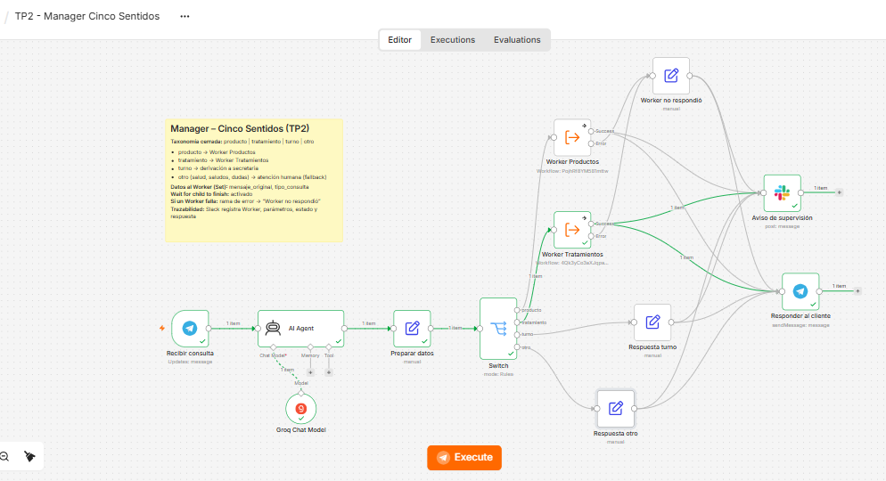
Recorrido: Recibir consulta (Telegram) → AI Agent (clasifica la consulta) → Preparar datos (Set) → Switch → Worker o respuesta directa → Aviso de supervisión (Slack) y Responder al cliente (Telegram).
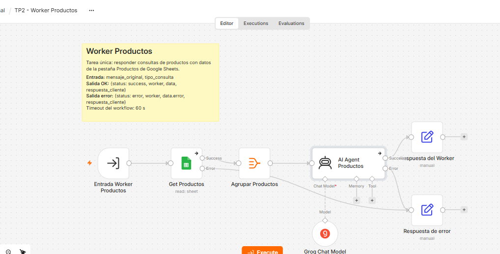
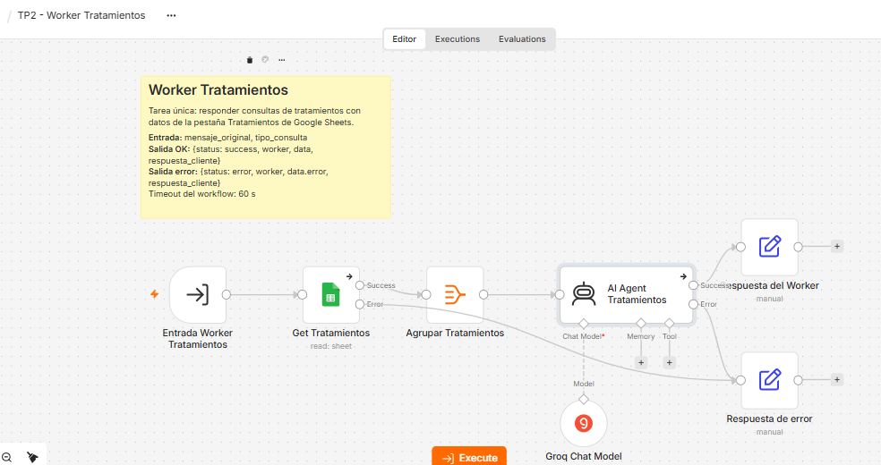
Cada Worker hace una sola tarea: leer su pestaña del catálogo y responder la consulta solo con esos datos. En el prompt le indiqué que no invente precios ni stock y que, si no encuentra lo pedido, avise que una persona del equipo lo va a confirmar.
El AI Agent del Manager clasifica cada mensaje en una de estas cuatro categorías (le pedí en el prompt que use solo estas):
| Categoría | Ejemplo | A dónde va |
|---|---|---|
| producto | “¿Cuánto sale el shampoo?” | Worker Productos |
| tratamiento | “¿Cuánto cuesta la exfoliación facial?” | Worker Tratamientos |
| turno | “Necesito un turno” | Respuesta turno: se avisa que la secretaria lo va a contactar |
| otro | Saludos, problemas de salud, otros temas | Respuesta otro: lo atiende una persona del equipo |
Después, el nodo Switch lee el campo tipo_consulta y envía la consulta por la salida que corresponde. “otro” es la salida por defecto (fallback): si el agente no clasifica bien, la consulta va a una persona.
Los turnos y los temas de salud no van a un Worker porque no necesitan el catálogo y los tiene que atender una persona.
Antes del Execute Workflow puse un nodo Set (“Preparar datos”) para mandar solo lo necesario y no todo lo que trae Telegram. El Worker recibe dos campos:
{
"mensaje_original": "Necesito saber el precio del shampoo",
"tipo_consulta": "producto"
}
Workflow: TP2 - Worker Productos
Workflow Inputs:
mensaje_original = {{ $json.mensaje_original }}
tipo_consulta = {{ $json.tipo_consulta }}
Wait for child to finish (Wait For Sub-Workflow Completion): activado
El nodo del Worker Tratamientos está configurado igual. Con “Wait for child to finish” el Manager espera la respuesta del Worker antes de seguir.
{
"status": "success",
"worker": "productos",
"data": { "mensaje_recibido": "...", "tipo_consulta": "producto" },
"respuesta_cliente": "Shampoo – Envase de 400 ml. Precio: 10.000 ARS."
}
El Manager usa respuesta_cliente para contestar por Telegram y el resto de los campos para el registro en Slack.
El nodo “Aviso de supervisión” deja en el canal #consultas-cinco-sentidos qué Worker se usó, qué datos se le mandaron y qué respondió. Ejemplo de una prueba:
Worker invocado: tratamientos Parámetros enviados: mensaje_original = "necesito saber cuánto sale el tratamiento facil", tipo_consulta = "tratamiento" Estado: success Respuesta devuelta: Lo siento, pero no encuentro un "tratamiento facil" en nuestro catálogo. Una persona de nuestro equipo confirmará la información y se comunicará contigo pronto.
"status": "error" y un mensaje para el cliente (nodo “Respuesta de error”).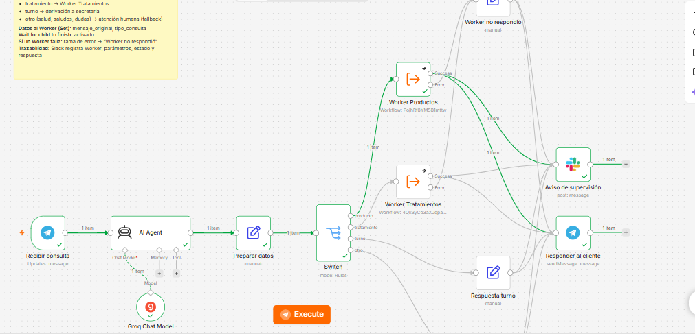
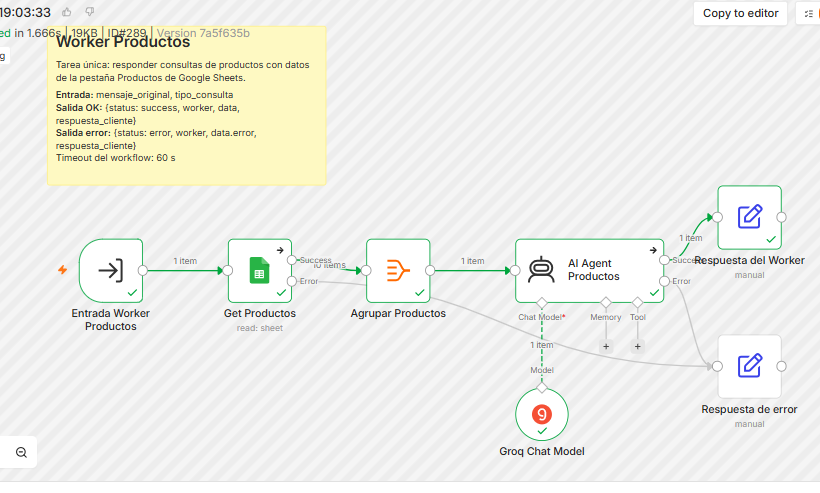
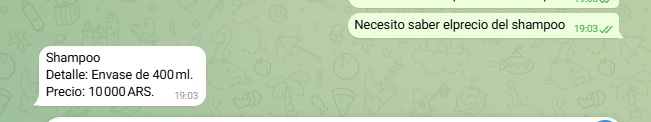
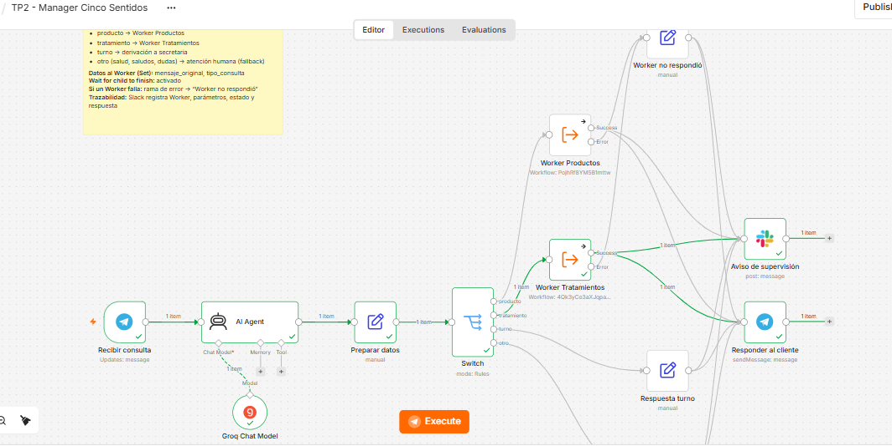
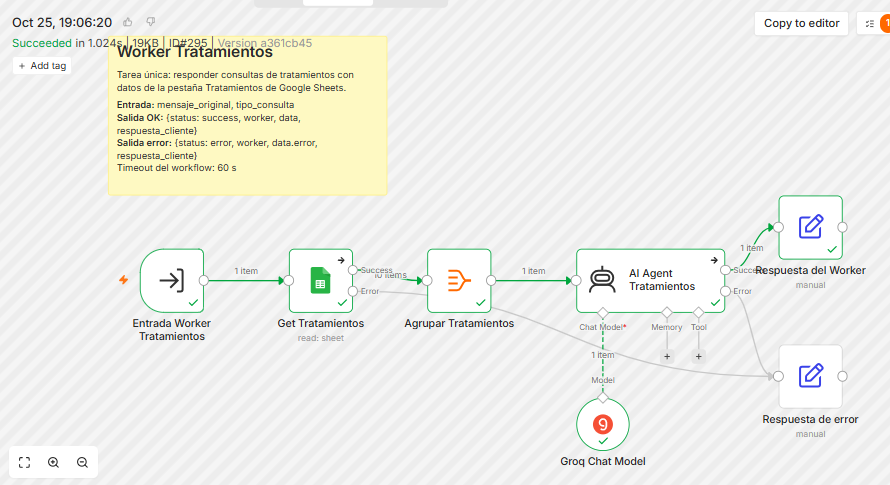
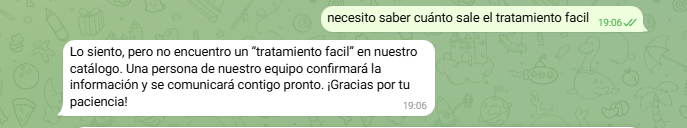
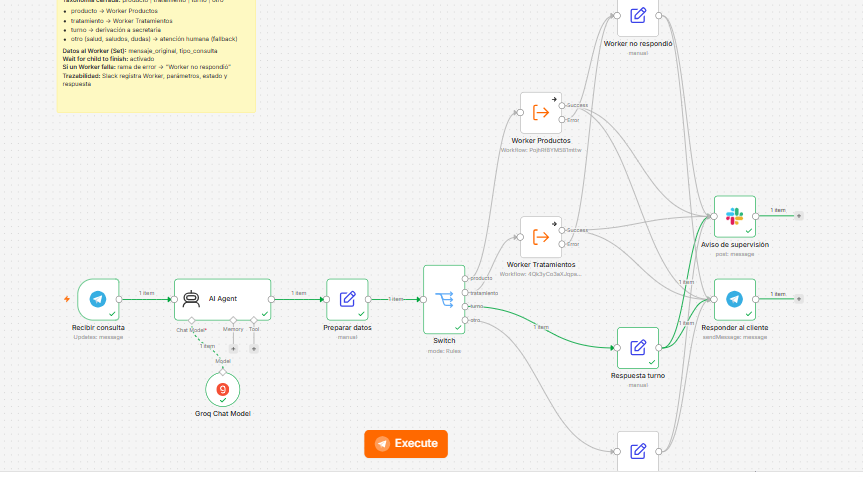
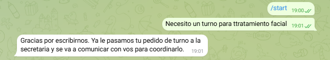